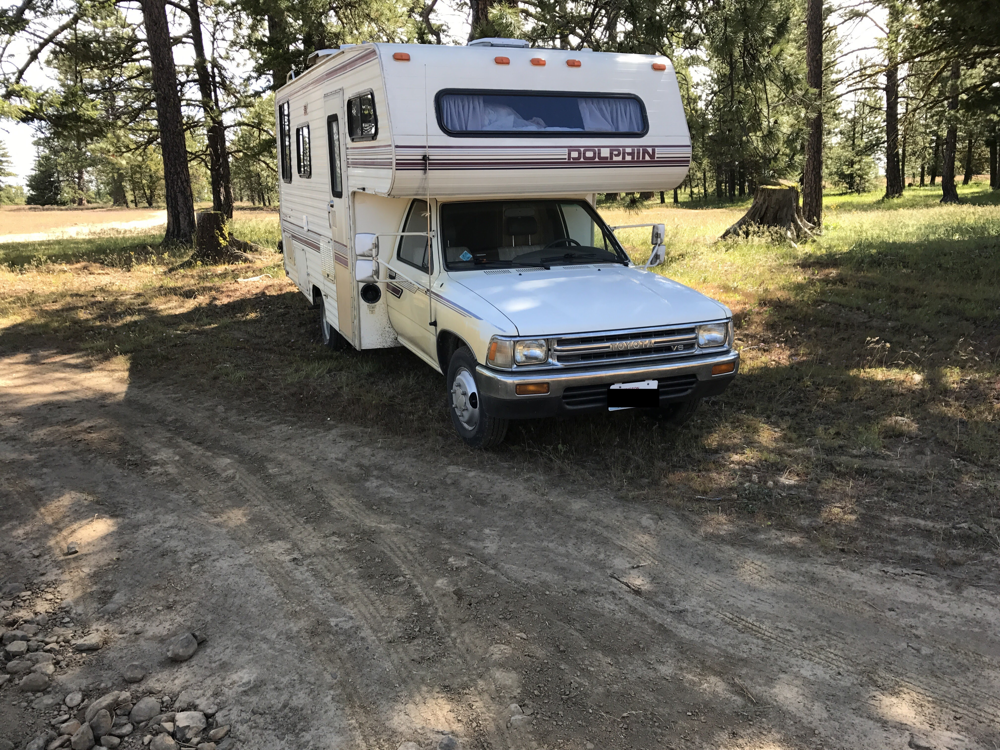

Description
The 1989 Toyota Dolphin RV is a classic model that has been well-maintained and is in excellent condition. It has a compact design that makes it easy to maneuver, while still offering plenty of living space and amenities.
This Dolphin sat in the midwest in storage unused for over a decade before coming west in 2015 for a new life which is why the mileage is so low. The truck run perfectly. While in storage some water damage was sustained on the passanger side and all of that was gutted and replaced with marine grade plywood. The original Dometic fridge leaked ammonia and has been removed and replaced with a small "dorm style" fridge that runs when plugged into power. Stereo has been replaced with a unit that supports bluetooth speakers in front and rear removed and replaced with quality speakers. Water pump has been replaced. All exterior seals and windows resealed last summer. Bench cushion zippers were replaced professionally. Heat and AC both work great. Stored indoors.
- Sleeps 4 people
- Full kitchen with stove, sink, and refrigerator
- Bathroom with shower, sink, and toilet
- Dinette that converts into a bed
- Overhead sleeping area
- Plenty of storage space
Photos

Pricing
The asking price for the 1989 Toyota Dolphin RV is $13,000.
Contact
Email squids.bluster.0z@icloud.com with inquiries.